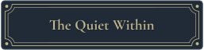
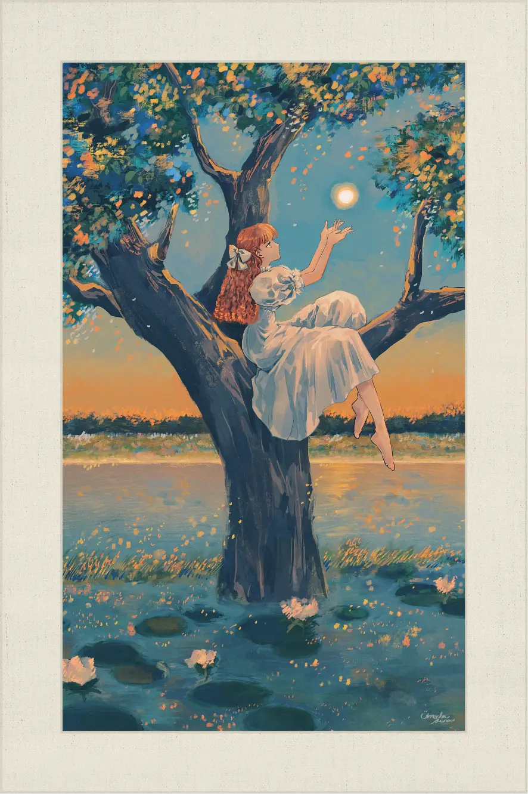
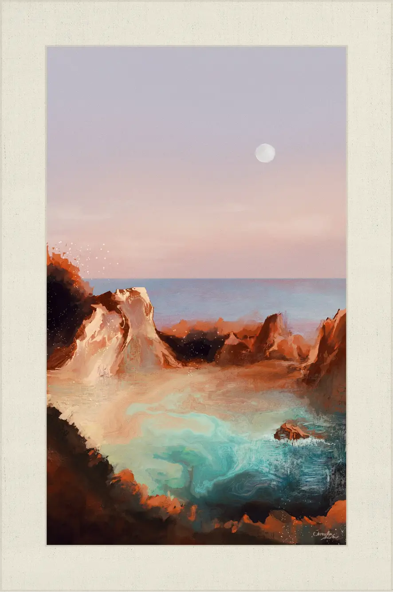
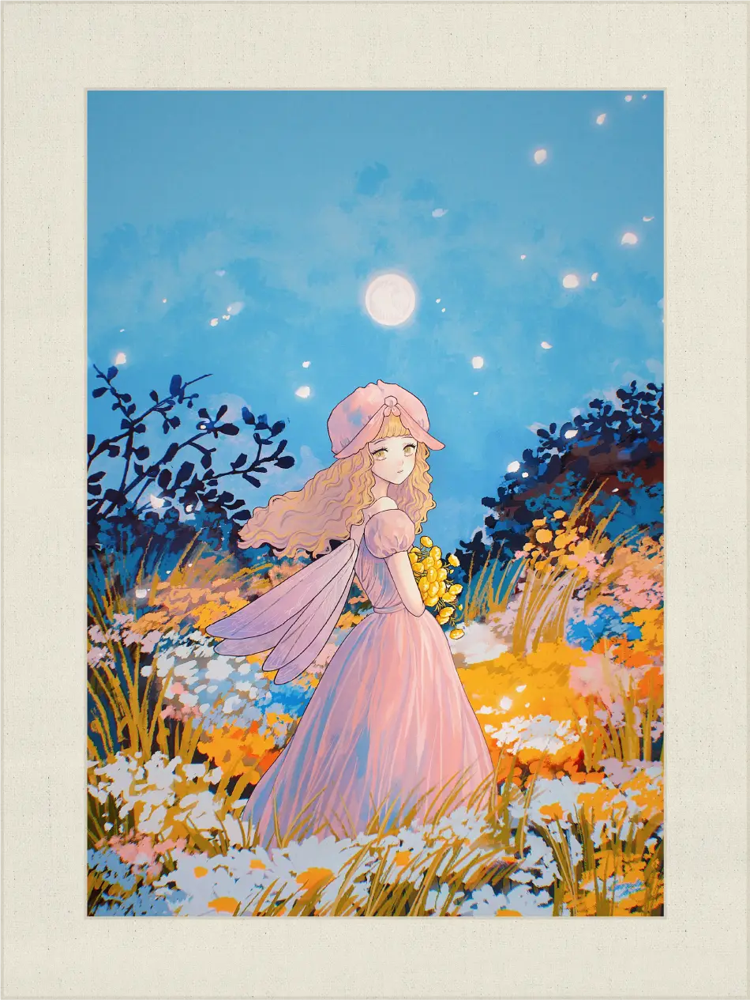

Embers in the Leaves
《2023.08.20》
晩夏の陽、木漏れ日に火の粉のような揺らぎ。

The Sunlit Depths
《2023.06.16》
初夏の朝日を浴びる海底。
A Pale Pink Seaside
《2023.06.16》
まどろむ海岸、偽物のような月。

裏庭のノクターン
《2021.05.08》
夜を想う花束。
◀︎
back to gallery
▶︎
◀︎ Prev
Back to Gallery
Next ▶︎